Handling Uncertainty Crash Course
Extracted from Workshop: “Handling Uncertainty in your Data”
Agenda
Measurement Precision
Confidence Intervals
Visualizing Uncertainty
Measurement Precision
Group-Level Precision
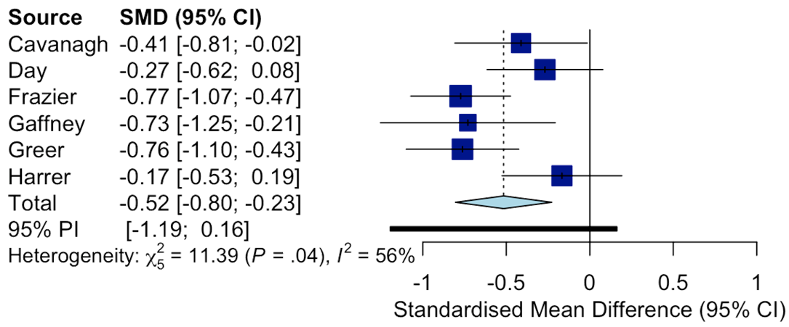https://bookdown.org/MathiasHarrer/Doing_Meta_Analysis_in_R/forest.html#forest-R
→ Effects in relation to their group-level precision
Subject-Level Precision
Is there a meaningful correlation?
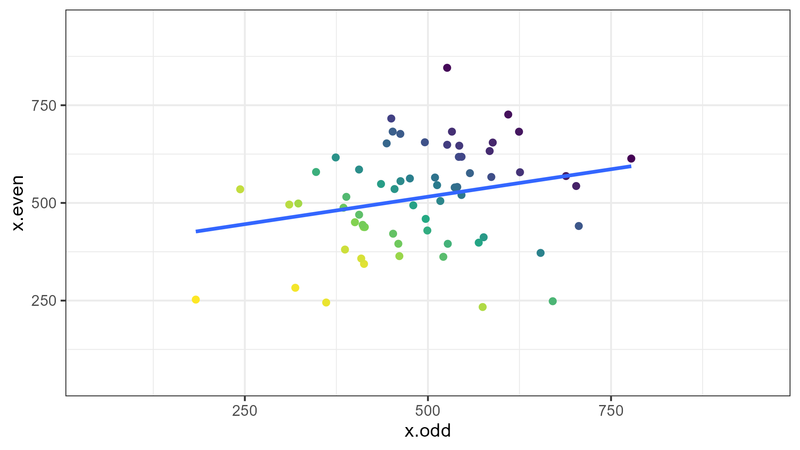Subject-Level Precision
Is there a meaningful correlation?
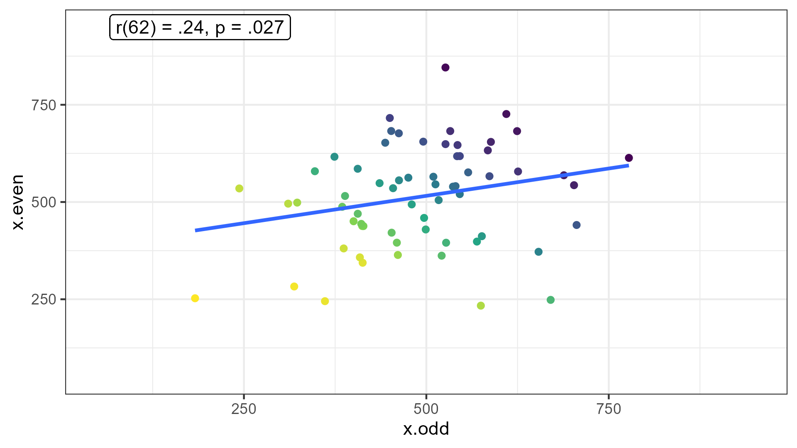Subject-Level Precision
Is there a meaningful correlation?
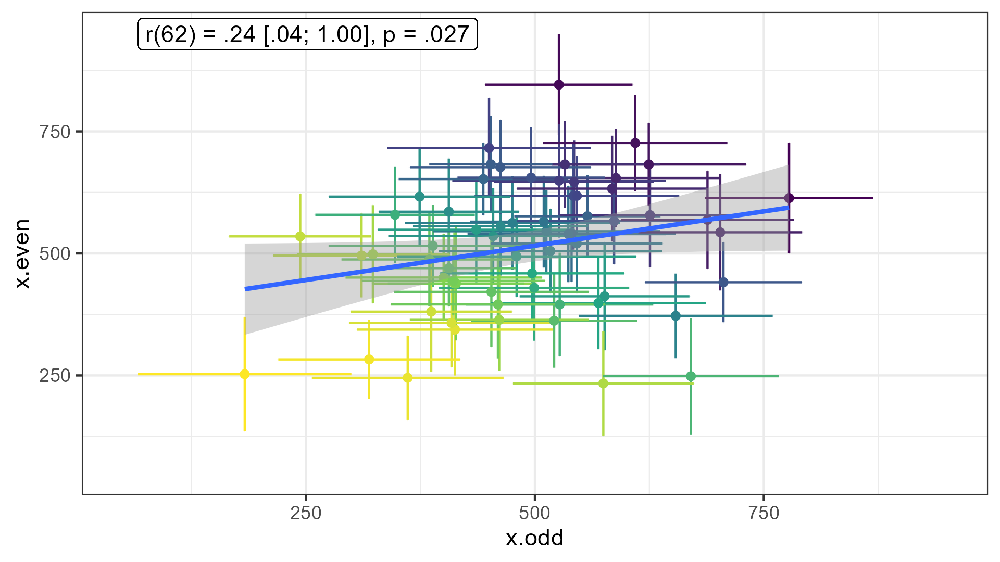Trial-Level Precision
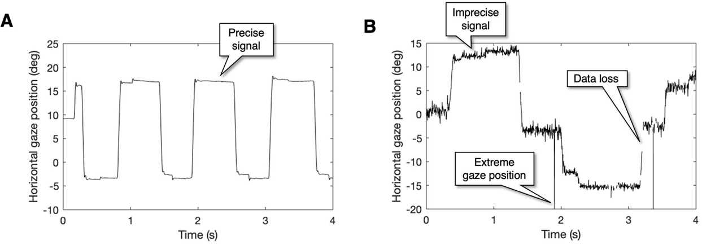Holmqvist et al. (2023, retracted)
Only relevant for time series data (i.e., several “measurements” per trial)
Note: Calculating standard deviation / error is not trivial here because of auto-correlation
What is Precision?
Precision is indicated by errorbars / confidence intervals
Whenever you
summarizeacross a variable, you can calculate the
precision of the aggregationPrecision exists on different levels: group, subject, trial (and more)
Closely linked to statistical power and reliability
How Can We Enhance Precision?
Shield the measurement from random noise → precise equipment / paradigm
⇒ trial-level precisionIdentify the aggregation level of interest:
- sample differences → optimize group-level precision:
many subjects that respond homogenously - correlational hypotheses / application → optimize subject-level precision:
systematic differences between individuals but little variability within subjects across many trials (mind “sequence effects”; cf. Nebe, Reutter, et al., 2023)
- sample differences → optimize group-level precision:
⇒ “two disciplines of scientific psychology” (Cronbach, 1957)
Group- vs. Subject-Level Precision
Group-Level Precision
Group differences (t-tests, ANOVA)
Many subjects (independent observations)
Homogenous sample (e.g., psychology students?)
Subject-Level Precision
Correlations (e.g., Reliability)
Many trials (careful: sequence effects!)
Heterogenous/diverse sample
Low variability within subjects across trials (i.e., SDwithin)
Summary: Precision
We are in a replication crisis
Increasing the number of subjects is not the only way to get out
Sample size benefits basic research on groups only
⇒ Increase precision on the aggregate level of interest!
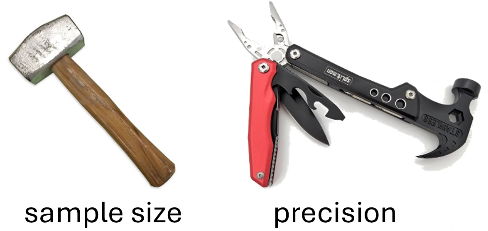Precision in R!
The Standard Error (SE)
Calculates the (lack of) precision of a mean based on the
standard deviation (\(SD\)) of the individual observations and their number (\(n\))
\[SE = \frac{SD}{\sqrt{n}}\]
The Standard Error (SE) in R
No base R function available üí©
Use
confintr::se_mean(not part of the tidyverse)Use a custom function
The Standard Error (SE) in R 2
Whenever you use mean, also calculate the SE:
library(tidyverse)
iris %>% #helpful data set for illustration
summarize( #aggregation => precision
across(.cols = starts_with("Sepal"), #everything(), #output too wide
.fns = list(mean = mean, se = confintr::se_mean)),
.by = Species) Species Sepal.Length_mean Sepal.Length_se Sepal.Width_mean Sepal.Width_se
1 setosa 5.006 0.04984957 3.428 0.05360780
2 versicolor 5.936 0.07299762 2.770 0.04437778
3 virginica 6.588 0.08992695 2.974 0.04560791
→ subject-level (species-level) precision
Standard Error Pitfalls in R
What is the group-level precision of Sepal.Length?
Note: Treat Species as subjects (N = 3) and rows within Species as trials.
data <-
iris %>%
rename(subject = Species, measure = Sepal.Length) %>%
mutate(trial = 1:n(), .by = subject) %>%
select(subject, trial, measure) %>% arrange(trial, subject) %>% tibble() #neater output
print(data)# A tibble: 150 × 3
subject trial measure
<fct> <int> <dbl>
1 setosa 1 5.1
2 versicolor 1 7
3 virginica 1 6.3
4 setosa 2 4.9
5 versicolor 2 6.4
6 virginica 2 5.8
7 setosa 3 4.7
8 versicolor 3 6.9
9 virginica 3 7.1
10 setosa 4 4.6
# ℹ 140 more rowsStandard Error Pitfalls in R
What is the group-level precision of Sepal.Length?
# A tibble: 1 × 2
m se
<dbl> <dbl>
1 5.84 0.0676Standard Error Pitfalls in R 2
What is the group-level precision of Sepal.Length?
data %>%
summarize(measure.subject = mean(measure), .by = subject) %>% #subject-level averages
summarize(m = mean(measure.subject),
se = confintr::se_mean(measure.subject),
n = n())# A tibble: 1 × 3
m se n
<dbl> <dbl> <int>
1 5.84 0.459 3⇒ When using trial-level data to calculate group-level precision, summarize twice!
⇒ Every summarize brings you up exactly one level - don’t try to skip!
trial-level → subject-level → group-level
Summary: Precision in R
data %>%
# from trial- to subject-level
summarize(.by = subject, #trial- to subject-level
measure.subject = mean(measure), #subject-level averages
se.subject = confintr::se_mean(measure)) %>% #subject-level precision
# from subject- to group-level
summarize(m = mean(measure.subject), #group-level mean ("grand average")
se = confintr::se_mean(measure.subject), #group-level precision
se.subject = mean(se.subject), #average subject-level precision (note: pooling should be used)
n = n())# A tibble: 1 × 4
m se se.subject n
<dbl> <dbl> <dbl> <int>
1 5.84 0.459 0.0709 3Confidence Intervals (CIs)
CIs around means
CIs around effect sizes
CIs around means
CIs in R
Easiest way is to use calls to t.test:
iris %>%
mutate(subject = 1:n(), .by = Species) %>%
pivot_wider(names_from = Species, values_from = Petal.Width) %>%
summarize(
setosa.ci.size = t.test(setosa)$conf.int %>% diff(), # or confintr::ci_mean(setosa)$interval %>% diff()
versicolor.ci.size = t.test(versicolor)$conf.int %>% diff(), # or confintr::ci_mean(versicolor)$interval %>% diff()
diff.ci.size = t.test(setosa, versicolor)$conf.int %>% diff() # or confintr::ci_mean_diff(setosa, versicolor)$interval %>% diff()
)# A tibble: 1 × 3
setosa.ci.size versicolor.ci.size diff.ci.size
<dbl> <dbl> <dbl>
1 0.0599 0.112 0.126CIs in R: Within-Subjects Design
It works similarly with paired t-tests (but the pivoting is slightly different):
iris %>%
mutate(subject = 1:n(), .by = Species) %>%
pivot_wider(names_from = Species, values_from = Petal.Width, id_cols = subject) %>%
summarize(
setosa.ci.size = t.test(setosa)$conf.int %>% diff(),
versicolor.ci.size = t.test(versicolor)$conf.int %>% diff(),
diff.ci.size = t.test(setosa, versicolor, paired = TRUE)$conf.int %>% diff() #or confintr::ci_mean(setosa - versicolor)$interval %>% diff()
)# A tibble: 1 × 3
setosa.ci.size versicolor.ci.size diff.ci.size
<dbl> <dbl> <dbl>
1 0.0599 0.112 0.136Summary: CIs around means
- CIs around means are different for one sample vs. independent samples vs. paired samples
- Mixed designs: Difficult! You will probably need to choose between between-subject or within-subject CIs (depending on your comparisons of interest; see later part!)
⇒ Be transparent! Describe how you calculated your CIs! (between vs. within, SE vs. CI) - Assumption: Normally distributed means
⇒ Might want to plot raw data (see last part!)
CIs around effect sizes
Cohen’s d
iris %>%
mutate(subject = 1:n(), .by = Species) %>%
pivot_wider(names_from = Species, values_from = Petal.Width) %>%
summarize(
setosa.test = t.test(setosa) %>% apa::t_apa(es_ci = TRUE, print = FALSE),
versicolor.test = t.test(versicolor) %>% apa::t_apa(es_ci = TRUE, print = FALSE),
diff.test = t.test(setosa, versicolor, var.equal = TRUE) %>% apa::t_apa(es_ci = TRUE, print = FALSE)
) %>%
pivot_longer(everything(), names_to = "test", values_to = "output") # nicer output[1] "The observed noncentrality parameter of the noncentral t-distribution has exceeded 37.62 in magnitude (R's limitation for accurate probabilities from the noncentral t-distribution) in the function's iterative search for the appropriate value(s). The results may be fine, but they might be inaccurate; use caution."# A tibble: 3 × 2
test output
<chr> <chr>
1 setosa.test t(49) = 16.51, p < .001, d = 2.33 [1.79; 2.87]
2 versicolor.test t(49) = 47.41, p < .001, d = 6.71 [5.32; 8.03]
3 diff.test t(98) = -34.08, p < .001, d = -6.82 [-7.83; -5.78]Correlations
ANOVAs: Preparation
The fhch2010 data set:
- Data from Freeman, Heathcote, Chalmers, & Hockley (2010), included in
afex. - Lexical decision and word naming latencies for 300 words and 300 nonwords.
- For simplicity, we’re only interested in the task (word naming or lexical decision; between subjects) and the stimulus (word or nonword; within subjects).
id task stimulus density frequency length item rt log_rt correct
1 N1 naming word high low 6 potted 1.091 0.08709471 TRUE
2 N1 naming word low high 6 engine 0.876 -0.13238919 TRUE
3 N1 naming word low high 5 ideal 0.710 -0.34249031 TRUE
4 N1 naming nonword high high 5 uares 1.210 0.19062036 TRUE
5 N1 naming nonword low high 4 xazz 0.843 -0.17078832 TRUE
6 N1 naming word high high 4 fill 0.785 -0.24207156 TRUEANOVAs
aov_words <-
afex::aov_ez(
id = "id",
dv = "rt",
data = fhch2010_summary,
between = "task",
within = "stimulus",
# we want to report partial eta² ("pes"), and include the intercept in the output table ...
anova_table = list(es = "pes", intercept = TRUE)
)
aov_words %>% apa::anova_apa() #optional: slightly different (APA-conform) output Effect
1 (Intercept) F(1, 43) = 904.33, p < .001, petasq = .95 ***
2 task F(1, 43) = 15.76, p < .001, petasq = .27 ***
3 stimulus F(1, 43) = 77.24, p < .001, petasq = .64 ***
4 task:stimulus F(1, 43) = 31.89, p < .001, petasq = .43 ***CI around partial eta²
In principle, apaTables offers a (non-vectorized) function for CIs around \(\eta_p^2\) …
# e.g., for our task effect
apaTables::get.ci.partial.eta.squared(
F.value = 15.76, df1 = 1, df2 = 43, conf.level = .95
)$LL
[1] 0.06851017
$UL
[1] 0.4511011… but it would be tedious to copy these values.
CI around partial eta²
A little clunky function that can be applied to afex tables:
peta.ci <-
function(anova_table, conf.level = .9) { # 90% CIs are recommended for partial eta²: https://daniellakens.blogspot.com/2014/06/calculating-confidence-intervals-for.html#:~:text=Why%20should%20you%20report%2090%25%20CI%20for%20eta%2Dsquared%3F
result <-
apply(anova_table, 1, function(x) {
ci <-
apaTables::get.ci.partial.eta.squared(
F.value = x["F"], df1 = x["num Df"], df2 = x["den Df"], conf.level = conf.level
)
return(setNames(c(ci$LL, ci$UL), c("LL", "UL")))
}) %>%
t() %>%
as.data.frame()
result$conf.level <- conf.level
return(result)
}CI around partial eta²
The result of custom function that applies the apaTables function to our entire ANOVA table:
LL UL conf.level
(Intercept) 0.92985360 0.9656284 0.9
task 0.09399555 0.4224818 0.9
stimulus 0.48335736 0.7294335 0.9
task:stimulus 0.23280549 0.5584355 0.9Also see this blogpost by Daniel Lakens from 2014 about CIs for \(\eta_p^2\).
Visualizing CIs
In the previous part, you learned about CIs around means and effect sizes.
CIs around means are for Figures.
CIs around effect sizes are for the statistical reporting section.
Visualizing CIs around means
In this part, we will visualize CIs around means for:
t-tests (one sample, independent samples, & paired samples),
ANOVAs (a simple \(2 \times 2\) interaction),
and correlations.
You have already learned how to calculate CIs around their effect sizes (Cohen’s d, \(\eta_p^2\), and Pearson’s r)
GgThemes
The default options in ggplot have some problems: Most importantly, text is too small. The easiest solution is to create your own theme that you apply to your plots.
I am currently using this theme adapted from an old script of Lara Rösler.
theme_set( # theme_set has to be executed every session; cf. library(tidyverse)
myGgTheme <- # you can save your theme in a local variable instead, add it to every plot, and save your environment across sessions
theme_bw() + # start with the black-and-white theme
theme(
#aspect.ratio = 1,
plot.title = element_text(hjust = 0.5),
panel.background = element_rect(fill = "white", color = "white"),
legend.background = element_rect(fill = "white", color = "grey"),
legend.key = element_rect(fill = "white"),
strip.background = element_rect(fill = "white"),
axis.ticks.x = element_line(color = "black"),
axis.line.x = element_line(color = "black"),
axis.line.y = element_line(color = "black"),
axis.text = element_text(color = "black"),
axis.text.x = element_text(size = 16, color = "black"),
axis.text.y = element_text(size = 16, color = "black"),
axis.title = element_text(size = 16, color = "black"),
legend.text = element_text(size = 14, color = "black"),
legend.title = element_text(size = 14, color = "black"),
strip.text = element_text(size = 12, color = "black"))
)One Sample t-test
Are the mean reaction times for naming words faster than 1 sec?
One Sample t-test: Visualization Code
ostt <-
fhch2010_summary_wordnaming %>%
summarize(
rt.m = mean(rt), #careful! if you do rt = mean(rt), you cannot calculate t.test(rt) afterwards
rt.ci.length = t.test(rt)$conf.int %>% diff()
) %>%
ggplot(aes(y = rt.m, x = "naming words")) +
geom_point() + #plot the mean
geom_errorbar(aes(ymin = rt.m - rt.ci.length/2, ymax = rt.m + rt.ci.length/2)) + #plot the CI
geom_hline(yintercept = 1, linetype = "dashed") #plot the population mean to test againstOne Sample t-test: Figure
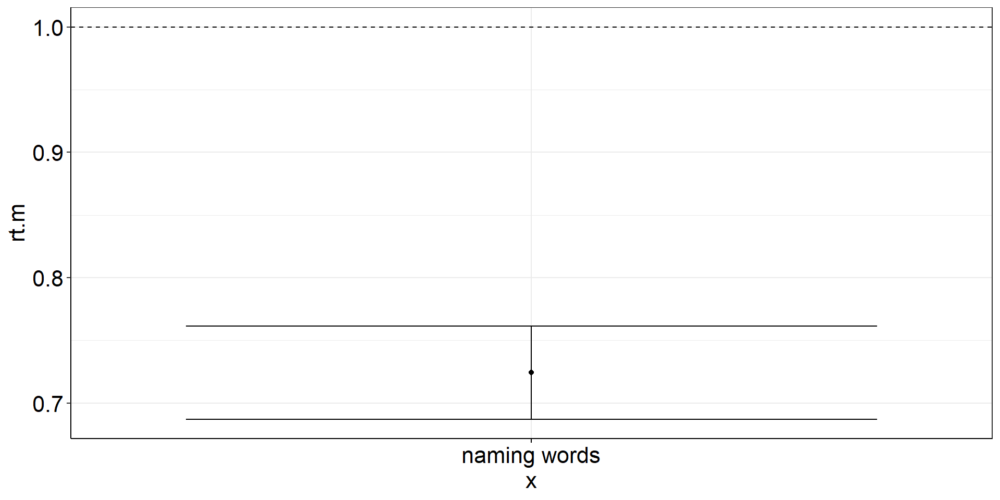Independent Samples t-test
Are the mean reaction times for naming words different from lexically identifying words?
fhch2010_summary_words <-
fhch2010_summary %>%
filter(stimulus == "word")
with(fhch2010_summary_words,
t.test(rt ~ task) #Welch test
#t.test(rt ~ task, var.equal = TRUE) #assume equal variances
) #%>% apa::t_apa(es_ci = TRUE) #does not work for Welch test :(
Welch Two Sample t-test
data: rt by task
t = -6.351, df = 28.554, p-value = 6.55e-07
alternative hypothesis: true difference in means between group naming and group lexdec is not equal to 0
95 percent confidence interval:
-0.5003253 -0.2564522
sample estimates:
mean in group naming mean in group lexdec
0.7241744 1.1025631 Independent Samples t-test: Viz Code
istt2 <-
fhch2010_summary_words %>%
pivot_wider(names_from = task, values_from = rt) %>%
summarize(
rt.m = mean(naming, na.rm = TRUE) - mean(lexdec, na.rm = TRUE), #difference of the means == mean difference
rt.ci.length = t.test(naming, lexdec)$conf.int %>% diff()
) %>%
ggplot(aes(y = rt.m, x = "difference")) +
geom_point() + #plot the mean difference
geom_errorbar(aes(ymin = rt.m - rt.ci.length/2, ymax = rt.m + rt.ci.length/2)) + #plot the difference CI
geom_hline(yintercept = 0, linetype = "dashed") #plot the population mean to test againstIndependent Samples t-test: CI of the difference: Figure
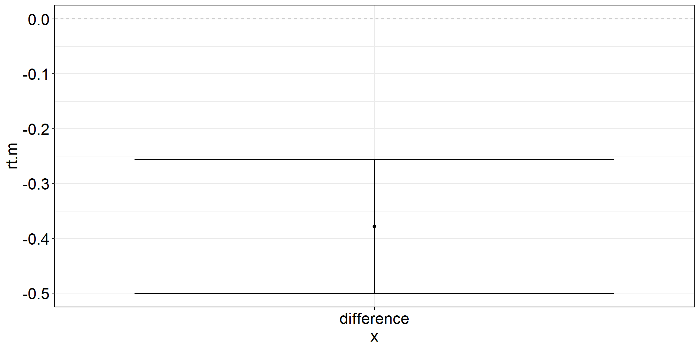Paired Samples t-test
Are the mean reaction times for naming words different from naming non-words?
fhch2010_summary_naming <-
fhch2010_summary %>%
filter(task == "naming")
# with(fhch2010_summary_naming, t.test(rt ~ stimulus, paired = TRUE)) #not allowed anymore :(
# fhch2010_summary_naming %>% rstatix::t_test(rt ~ stimulus, paired = TRUE, detailed = TRUE) # alternative!
with(fhch2010_summary_naming %>%
pivot_wider(names_from = stimulus, values_from = rt, id_cols = id), #make pairing by id explicit
t.test(word, nonword, paired = TRUE)) %>%
apa::t_apa(es_ci = TRUE) # output to APA formatt(19) = -12.87, p < .001, d = -2.88 [-3.88; -1.86]Paired Samples t-test: Viz Code?
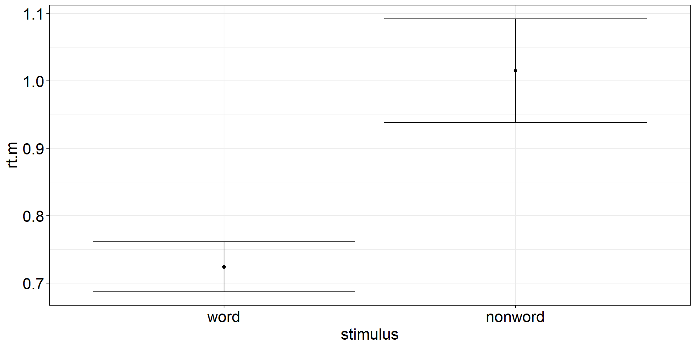
There is a difference between the precision of the means (aggregated across subjects) and the
precision of the paired differences (paired within the same subjects and then aggregated across).
Between- vs. Within-Subject Error
Between- and within-subject variance can be (partially) independent.
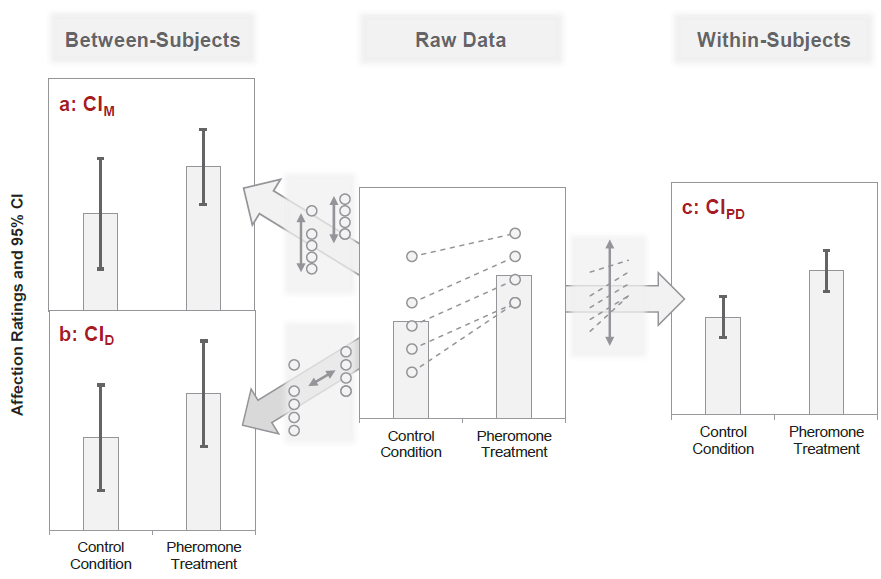Pfister & Janczyk (2013), Fig. 1
Paired Samples t-test: Insight
The paired samples t-test of two factor levels
with(fhch2010_summary_naming %>%
pivot_wider(names_from = stimulus, values_from = rt, id_cols = id), #make pairing by id explicit
t.test(word, nonword, paired = TRUE)) %>%
apa::t_apa(es_ci = TRUE) # output to APA formatt(19) = -12.87, p < .001, d = -2.88 [-3.88; -1.86]… is the one sample t-test of the paired differences (i.e., slopes between the factor levels).
Paired Samples t-test: Viz Code
pstt <-
fhch2010_summary_naming %>%
pivot_wider(names_from = stimulus, values_from = rt, id_cols = id) %>% #make pairing by id explicit
mutate(diff = word - nonword) %>%
#almost identical to one sample t-test from here
summarize(diff.m = mean(diff),
diff.ci.length = t.test(word, nonword, paired = TRUE)$conf.int %>% diff()
) %>%
ggplot(aes(y = diff.m, x = "naming words vs. non-words")) +
geom_point() + #plot the mean
geom_errorbar(aes(ymin = diff.m - diff.ci.length/2, ymax = diff.m + diff.ci.length/2)) + #plot the CI
geom_hline(yintercept = 0, linetype = "dashed") #plot the population mean to test againstPaired Samples t-test: Figure
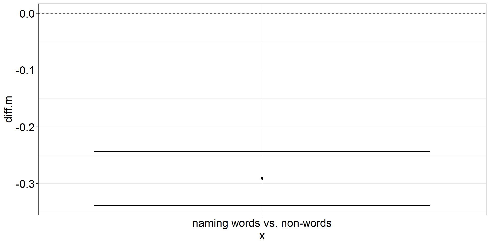ANOVA
Is the reaction time difference between words and non-words different for naming vs. lexical decision?
aov_words <-
afex::aov_ez(
id = "id",
dv = "rt",
data = fhch2010_summary,
between = "task",
within = "stimulus",
# we want to report partial eta² ("pes"), and include the intercept in the output table ...
anova_table = list(es = "pes", intercept = TRUE))
aov_words %>% apa::anova_apa() #optional: slightly different (APA-conform) output Effect
1 (Intercept) F(1, 43) = 904.33, p < .001, petasq = .95 ***
2 task F(1, 43) = 15.76, p < .001, petasq = .27 ***
3 stimulus F(1, 43) = 77.24, p < .001, petasq = .64 ***
4 task:stimulus F(1, 43) = 31.89, p < .001, petasq = .43 ***ANOVA interaction: Viz Code 1
Within-effect modulated by between-variable:
Is the reaction time difference between words and non-words different for naming vs. lexical decision?
aov1 <-
fhch2010_summary %>%
pivot_wider(names_from = stimulus, values_from = rt, id_cols = c(id, task)) %>%
summarize(
.by = task, #for each condition combination
diff.m = mean(word - nonword),
diff.ci.length = t.test(word, nonword, paired = TRUE)$conf.int %>% diff()
) %>%
ggplot(aes(y = diff.m, x = task)) +
geom_point() + #plot the mean
geom_errorbar(aes(ymin = diff.m - diff.ci.length/2, ymax = diff.m + diff.ci.length/2)) + #plot the CI
geom_hline(yintercept = 0, linetype = "dashed") #plot the population mean to test againstANOVA interaction: Viz Code 2
Between-effect modulated by within-variable:
Is the reaction time difference between naming and lexical decision different for words vs. non-words?
aov2 <-
fhch2010_summary %>%
pivot_wider(names_from = task, values_from = rt, id_cols = c(id, stimulus)) %>%
summarize(
.by = stimulus, # task is implicitly kept due to pivot_wider
ci.length = t.test(naming, lexdec)$conf.int %>% diff(), # do this first so we can overwrite naming & lexdec
naming = mean(naming, na.rm = TRUE),
lexdec = mean(lexdec, na.rm = TRUE)
) %>%
pivot_longer(cols = c(naming, lexdec), names_to = "task", values_to = "rt.m") %>%
ggplot(aes(y = rt.m, x = task, color = stimulus)) +
facet_wrap(vars(stimulus), labeller = label_both) +
geom_point(position = position_dodge(.9)) + # explicitly specify default width = .9
geom_errorbar(aes(ymin = rt.m - ci.length/2, ymax = rt.m + ci.length/2),
position = position_dodge(.9)) + # explicitly specify default width = .9
theme(legend.position = "top")ANOVA interaction: Viz Code 2.2
Between-effect modulated by within-variable:
Is the reaction time difference between naming and lexical decision different for words vs. non-words?
aov2 <-
fhch2010_summary %>%
# alternative: spare the first pivot by using base R indexing (only safe for between-subjects variables)
summarize(
.by = stimulus,
ci.length = t.test(rt[task == "naming"], rt[task == "lexdec"])$conf.int %>% diff(),
naming = mean(rt[task == "naming"]), # we want to put CIs on RT this time, not on RT difference
lexdec = mean(rt[task == "lexdec"])
) %>%
pivot_longer(cols = c(naming, lexdec), names_to = "task", values_to = "rt.m") %>%
ggplot(aes(y = rt.m, x = task, color = stimulus)) +
facet_wrap(vars(stimulus), labeller = label_both) +
geom_point(position = position_dodge(.9)) + #explicitly specify default width = .9
geom_errorbar(aes(ymin = rt.m - ci.length/2, ymax = rt.m + ci.length/2),
position = position_dodge(.9)) + #explicitly specify default width = .9
theme(legend.position = "top")ANOVA interaction: Figures
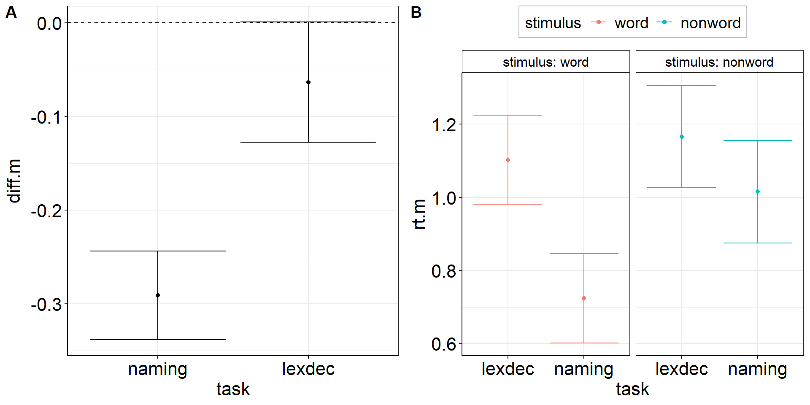Within-Errors on Marginal Means
There are methods to draw within-subject errors directly on marginal means instead of on paired differences (e.g., Morey, 2008).
While this is okay for the simplest design including one within-variable with just two factor levels, this already becomes problematic at 3 levels because sphericity may not hold, i.e., the variance may be heterogenous across paired differences (level 1-2 vs. 2-3).
→ If the CI for 1-2 is small but CI for 2-3 is large. What do you plot on factor level 2?
⇒ The within-subjects standard error is a characteristic of paired differences and should thus not be plotted on factor levels.
Correlations
What is the correlation between reactions to words and non-words in the lexical decision task?
We want to include subject-level CIs, so we need to start with the trial-level data!
fhch2010_summary2 <-
afex::fhch2010 %>% #trial-level data!
filter(task == "lexdec") %>%
summarize(.by = c(id, task, stimulus), #retain task column for future reference
rt.m = mean(rt),
rt.m.low = t.test(rt)$conf.int[[1]], #subject-level CIs!
rt.m.high = t.test(rt)$conf.int[[2]]) #subject-level CIs!
correl <-
with(fhch2010_summary2 %>%
pivot_wider(names_from = stimulus, values_from = rt.m, id_cols = id),
cor.test(word, nonword)) %>% apa::cor_apa(r_ci = TRUE, print = FALSE)
correl[1] "r(23) = .85 [.69; .93], p < .001"Correlations: Viz Code
correlplot <-
fhch2010_summary2 %>%
pivot_wider(names_from = stimulus, values_from = starts_with("rt.m")) %>% #also rt.m.low & rt.m.high
ggplot(aes(x = rt.m_nonword, y = rt.m_word)) + #non-words vs. words
stat_smooth(method = "lm", se = TRUE) + #linear regression line with confidence bands
geom_point() + #rt means of individual subjects
geom_errorbarh(aes(xmin = rt.m.low_nonword, xmax = rt.m.high_nonword)) + #horizontal CIs: non-words
geom_errorbar (aes(ymin = rt.m.low_word, ymax = rt.m.high_word)) + #vertical CIs: words
geom_label(aes(x = min(rt.m.low_nonword), y = max(rt.m.high_word)), #statistics to show off
hjust = "inward",
label = correl)Correlations: Figure
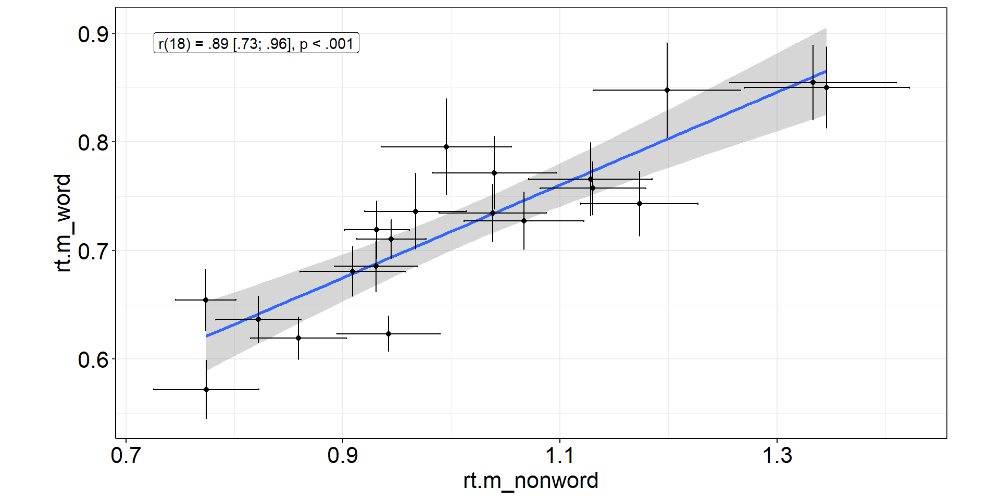Visualizing “Raw Data”
As we see from the previous scatter plot, it is informative to see individual “raw data” points. Wouldn’t this be nice to have for the group-differences plots (t-tests + ANOVA), too?
With ggplot, we can simply add a new layer on our previous plots aov1 and aov2.
Quick technical note: Usually, we do not visualize the “raw” (trial-level) data but the subject-level aggregates (→ we could always visualize subject-level precision!).
Stacked Points
aov1 +
geom_dotplot( # experts can try ggbeeswarm::geom_beeswarm()
data = fhch2010_summary %>% #I should have saved this calculation step...
pivot_wider(names_from = "stimulus", values_from = "rt", id_cols = c(id, task)) %>%
mutate(diff.m = word - nonword), #if we call this diff.m, it conforms to aov1
#aes(y = diff.m, x = task), #inherited from aov1
binaxis = "y",
stackdir = "center",
alpha = .5
)Stacked Points

Stacked Points 2
aov2.plot <- aov2 +
geom_dotplot( # experts can try ggbeeswarm::geom_beeswarm()
data = fhch2010_summary %>% rename(rt.m = rt), #conform to naming in aov2
#aes(y = rt.m, x = task), #inherited from aov2
aes(fill = stimulus), #dotplot dots have color = outer border, fill = inner color
binaxis = "y",
stackdir = "center",
alpha = .5
)
aov2.plotStacked Points 2
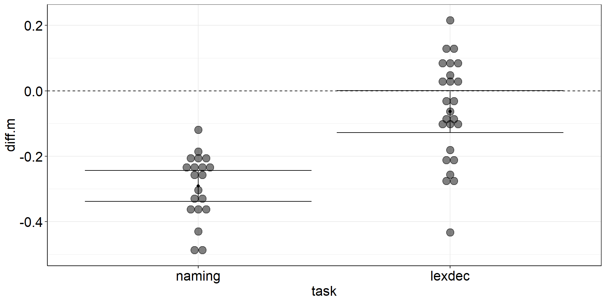
Stacked Points 3
Now that we have added individual points, can we also add individual slopes to show the variability in within-subject changes between words and nonwords?
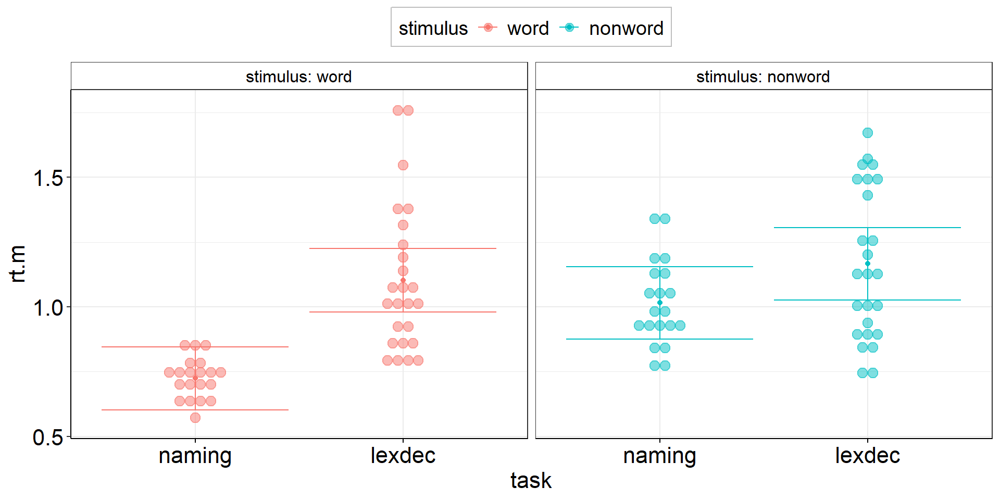No! Within-subject variable levels need to be next to each other!
⇒ Switch the position of both variables in the plot
Stacked Points 3: Switched
aov3 <-
fhch2010_summary %>%
pivot_wider(names_from = stimulus, values_from = rt, id_cols = c(id, task)) %>%
summarize(
.by = task, # stimulus is implicitly kept due to pivot_wider
ci.length = confintr::ci_mean(word - nonword)$interval %>% diff(), # do this first so we can overwrite word & nonword
# ci.length = t.test(word, nonword, paired = TRUE)$conf.int[1:2] %>% diff(), # alternative - same result!
word = mean(word, na.rm = TRUE),
nonword = mean(nonword, na.rm = TRUE)
) %>%
pivot_longer(cols = c(word, nonword), names_to = "stimulus", values_to = "rt.m") %>%
ggplot(aes(y = rt.m, x = stimulus, color = task)) + # task and stimulus switched compared to aov2
facet_wrap(vars(task), labeller = label_both) + # task and stimulus switched compared to aov2
scale_color_viridis_d(option = "H") + # switch color palette to make different variables more apparent
scale_fill_viridis_d(option = "H") + # also for fill because this is needed in dot plot
geom_point(position = position_dodge(.9)) + # explicitly specify default width = .9
geom_errorbar(aes(ymin = rt.m - ci.length/2, ymax = rt.m + ci.length/2),
position = position_dodge(.9)) + # explicitly specify default width = .9
scale_y_continuous(limits = c(.6, 1.4)) + # explicitly set axis to make plots comparable
myGgTheme +
theme(legend.position = "top")
aov3Stacked Points 3: Switched

Stacked Points 3
aov3 +
geom_dotplot( # experts can try ggbeeswarm::geom_beeswarm()
data = fhch2010_summary %>% rename(rt.m = rt), #conform to naming in aov3
#aes(y = rt.m, x = stimulus), #inherited from aov3
aes(fill = task), #dotplot dots have color = outer border, fill = inner color
binaxis = "y",
stackdir = "center",
alpha = .5
) +
geom_line( #add individual slopes
data = fhch2010_summary %>% rename(rt.m = rt), #conform to naming in aov3
aes(group = id), #one line for each subject; sometimes you need: group = interaction(id, task)
alpha = .5) +
#plot group-level information again (on top) but black and bigger
geom_point(position = position_dodge(.9), color = "black", size = 3) +
geom_errorbar(aes(ymin = rt.m - ci.length/2, ymax = rt.m + ci.length/2),
position = position_dodge(.9),
color = "black", linewidth = 1.125)Stacked Points 3
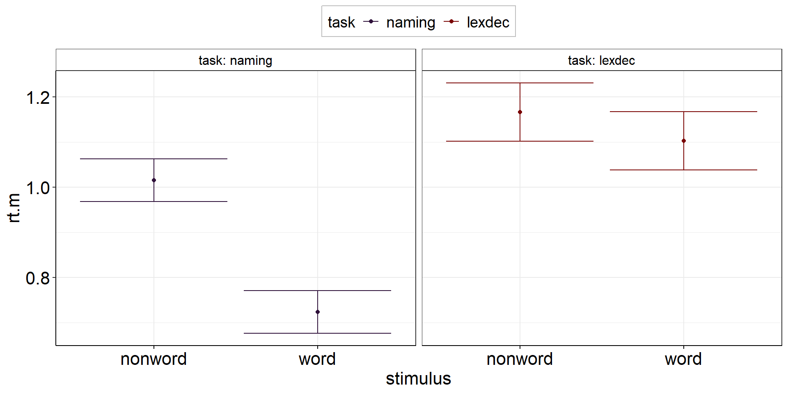
Jittered Points
Jittered Points
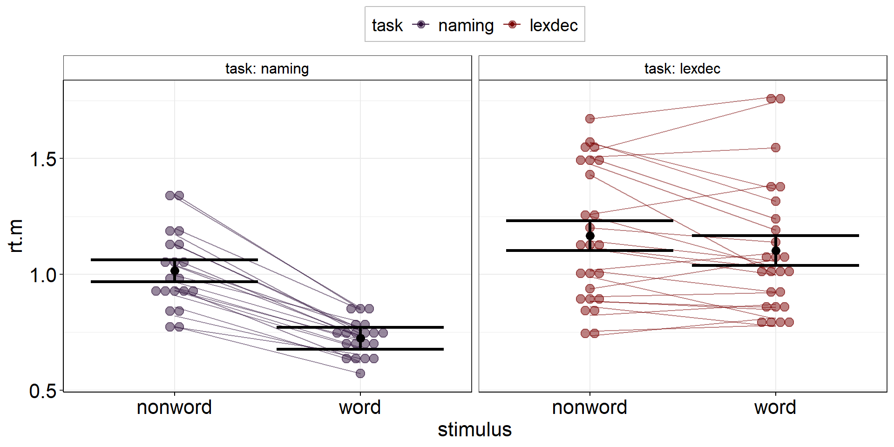
Jittered Points with Individual Slopes
Only geom_path() is able to align points + lines! geom_line() will not work here. (Ordering can be important: geom_path() connects the observations in the order in which they appear in the data.)
aov3 +
geom_jitter(
data = fhch2010_summary %>% rename(rt.m = rt),
position = position_jitter(width = .25, seed = 1337), #same seed needed!
) +
geom_path( #add individual slopes
data = fhch2010_summary %>% rename(rt.m = rt),
aes(group = id),
position = position_jitter(width = .25, seed = 1337), #same seed needed!
alpha = .5) +
#plot group-level information again (on top) but black and bigger
geom_point(position = position_dodge(.9), color = "black", size = 3) +
geom_errorbar(aes(ymin = rt.m - ci.length/2, ymax = rt.m + ci.length/2), position = position_dodge(.9),
color = "black", linewidth = 1.125)Jittered Points with Individual Slopes
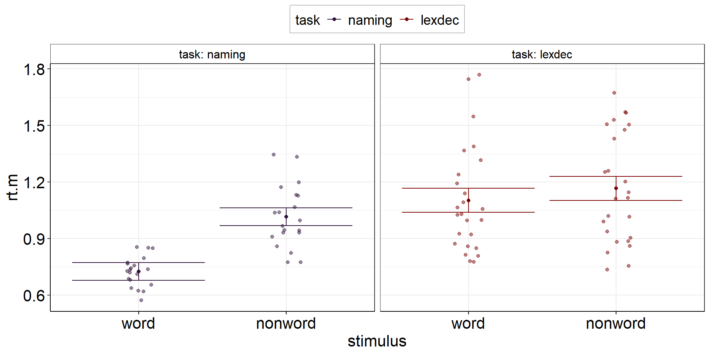
Density
aov3 +
geom_violin(
data = fhch2010_summary %>% rename(rt.m = rt), #conform to naming in aov3
#aes(y = rt.m, x = stimulus), #inherited from aov3
aes(fill = task), #dotplot dots have color = outer border, fill = inner color
alpha = .5
) +
geom_line( #add individual slopes
data = fhch2010_summary %>% rename(rt.m = rt), #conform to naming in aov3
aes(group = id), #one line for each subject; sometimes you need: group = interaction(id, task)
alpha = .5) +
#plot group-level information again (on top) but black and bigger
geom_point(position = position_dodge(.9), color = "black", size = 3) +
geom_errorbar(aes(ymin = rt.m - ci.length/2, ymax = rt.m + ci.length/2), position = position_dodge(.9),
color = "black", linewidth = 1.125)Density
Tough Decisions
What looks most insightful (or most pleasing) depends heavily on your sample size (and your personal preference).
Usually, the plots shown here work best with sample size in ascending order:
dot plotfor small samplesjittered pointsfor medium samplesviolin plotfor large samples
Everything Everywhere All at Once
If you are prone to decision paralysis, try a mixture of jittered points and violin plot:
the Raincloud Plot (Allen et al., 2019)
{kind=link}
Summary: Visualizing Uncertainty
- Vital difference between i) between- and ii) within-subject variability (slopes / paired differences)
⇒ Oftentimes, between-subject uncertainty is visualized for within-subject designs üò± - CIs of differences (e.g., independent or paired samples t-test) belong on difference scores
- CIs of differences can be transferred to individual factor levels but this creates
problems esp. if homoscedasticity or sphericity is not met
⇒ Plots should inform about violations of statistical assumptions, not cover them up! ⇒ If you plot individual factor levels instead of differences, show their one sample CI (or SE) on them - Visualizing “raw” data (i.e., subject-level aggregates) helps with detecting violations of normality
Thanks for Your Attention!
Learning objectives:
- Recognize your aggregate level of interest for research questions and how you can improve its precision
- Calculate precision in R (on different aggregation levels)
- Understand different versions of CIs and which one you need for your data
- Calculate the appropriate CI (around means vs. around effects) in
R - Be aware of the difference between the variance components between and within subjects
- Know how to plot subject-level averages with group-level aggregates and CIs